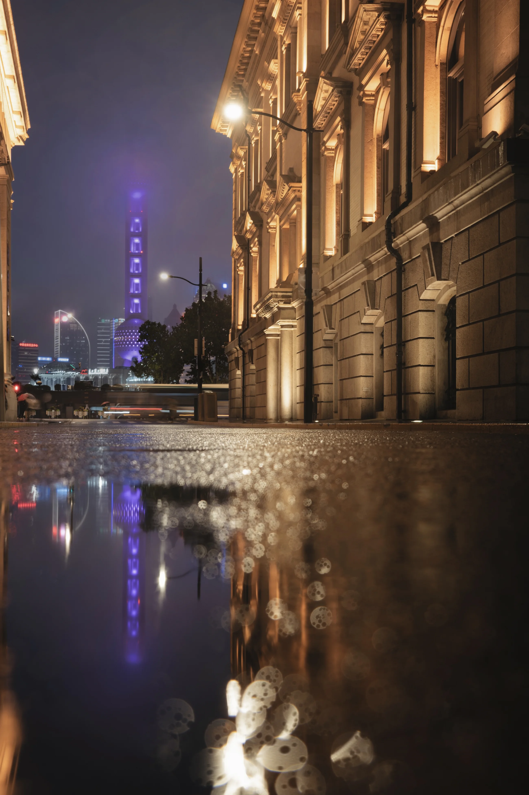
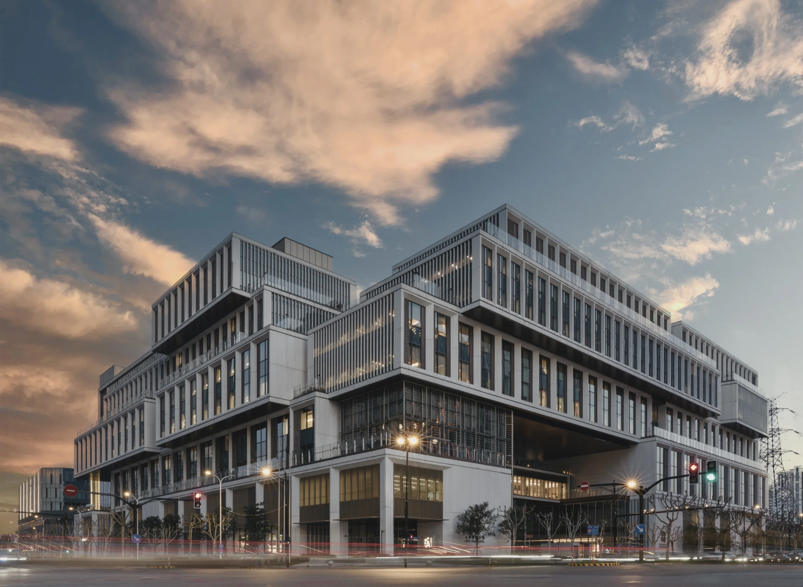

Stillness
Series
A quiet study of Shanghai after rain, where monumental architecture dissolves into reflections, haze, and the temporary surfaces of the street.


A quiet study of Shanghai after rain, where monumental architecture dissolves into reflections, haze, and the temporary surfaces of the street.

